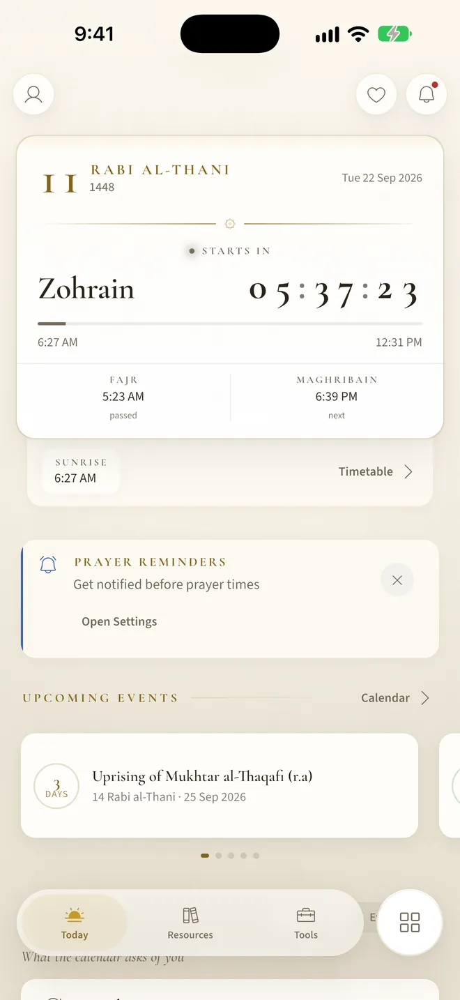
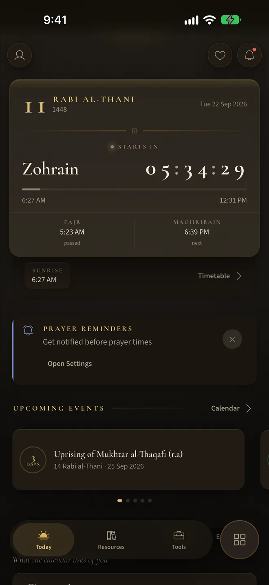
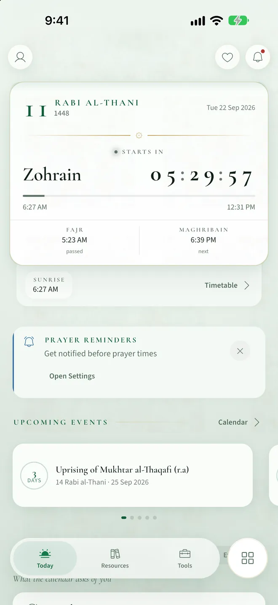
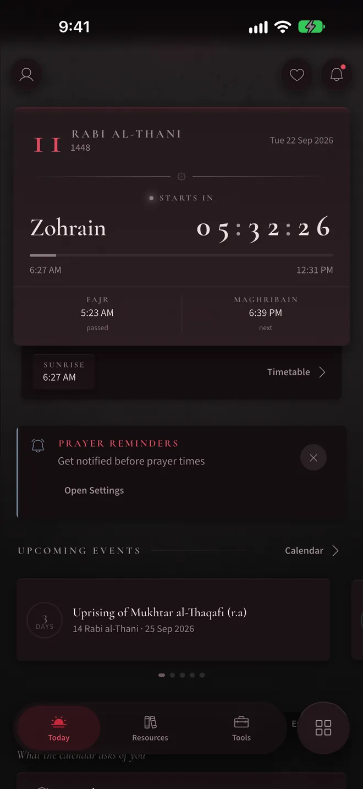

A companion for every day of the Islamic year
Prayer times by the Ja'fari method, the complete Quran, duas, ziyarat and aamaal, organised around the Hijri calendar. Free, with no ads and no account needed.
For iPhone and iPad on iOS 15.5 or later, and Android phones and tablets on Android 10 or later.




The app follows the Hijri calendar and changes its light with it. Try the four palettes.
Inside the app
Made for the Shia Ithna-Ashari community
The Ja'fari method only
Three prayer windows, Fajr, Zohrain and Maghribain, with per-prayer minute adjustments. Times and qibla are calculated on your device.
Texts reproduced verbatim
Every Arabic text, translation and transliteration comes from a published source, unedited.
Works offline
The Quran and every supplication are bundled with the app, so reading needs no connection.
No ads, no account needed
Use everything as a guest. An optional account syncs favourites and the qaza tracker across your devices.
Download Eisaal
Free for iPhone, iPad and Android.
Scan with your phone's camera to download.
Legal & support
Privacy Policy
What the app collects, why, which service providers process it, how long it is kept, and how to export or delete it.
Terms of Service
Your licence to use the app, acceptable use, and the disclaimer that applies to religious content and calculated prayer times.
Delete your account
Step-by-step deletion inside the app, an email route if you have already uninstalled it, and a full list of what is erased.
Support & FAQ
The prayer-time method, notification troubleshooting, data export, and how to report an error in a religious text.
Eisaal is published by Eisaal Foundation. Email shortfiqh@gmail.com for support, for privacy and deletion requests, or to report a correction to any religious text in the app.